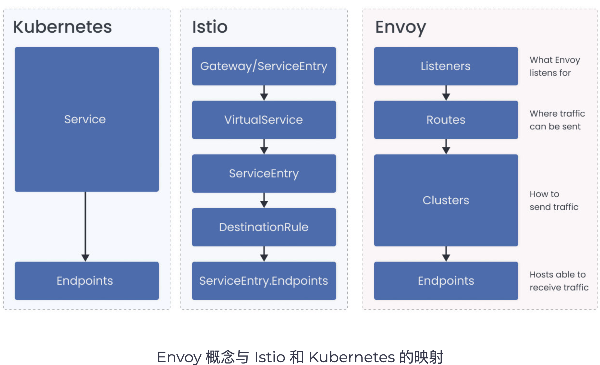
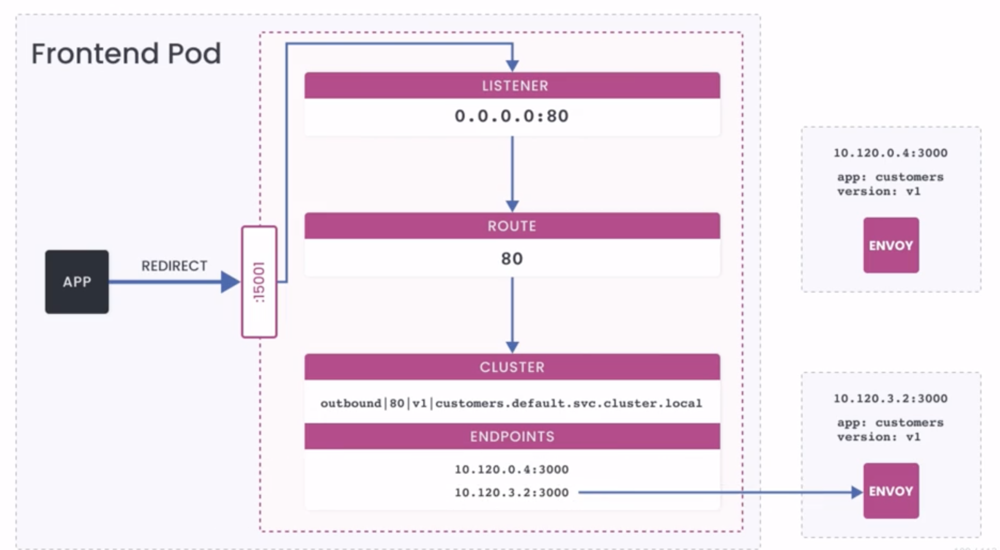
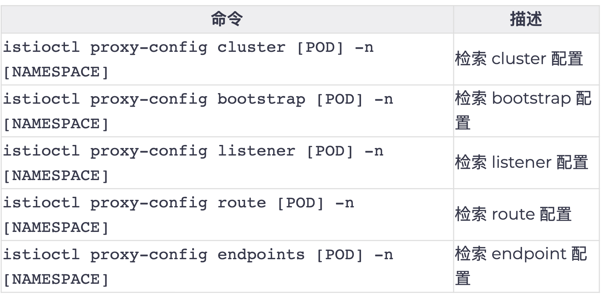
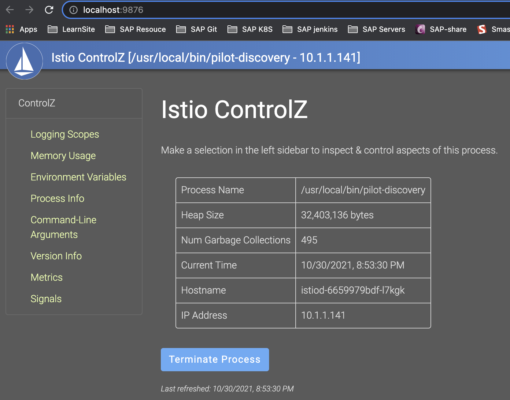

第八节 Istio 问题排查
1、Envoy基础
为了排除Istio的问题，对Envoy的工作原理有一个基本的了解是很有帮助的。Envoy配置是 一个JSON文件，分为多个部分。我们需要了解Envoy的基本概念是监听器、路由、集群和端点。
这些概念映射到istio和Kubernetes资源，如下图所示。

Basics of Envoy
- JSON configuration
-
Basic concepts:
- Listeners
- Routes
- Cluster
- Endpoints
-
Multiple listeners for each sidecar
- Inbound:
0.0.0.0:15006 - Outbound:
0.0.0.0:15001
- Inbound:
-
Listeners hands off requests off to a virtual listener
- Default: PassthroughCluster
监听器是命名的网络位置，通常是一个IP和端口。Envoy对这些位置进行监听，这是它接收和连接和请求的地方。
- 每个sidecar都有多个监听器生成。每个sidecar都有一个监听器，它被绑定到
0.0.0.0:15006。 - 这是
IP Tables将所有入站流量发送到Pod的地址。第二个监听器被绑定到0.0.0.0:15001，这是所有从Pod中出站的流量地址。
当一个请求被重定向（使用IP Tables配置）到15001端口时，监听器会把它交给与请求的原始目的地最匹配的虚拟监听器。如果它找不到目的地，它就根据配置的 OutboundTrafficPolicy来发送流量。默认情况下，请求被发送到PassthroughCluster, 该集群连接到应用程序选择的目的地，Envoy没有进行任何负载均衡。
2、Envoy实例
让我们以Web前端和customers服务为例，看看Envoy如何确定将请求从Web前端发送到customers服务（customers.default.svc.cluster.local）的位置。
1gateway.yaml
apiVersion: networking.istio.io/v1alpha3
kind: Gateway
metadata:
name: gateway
spec:
selector:
istio: ingressgateway
servers:
- port:
number: 80
name: http
protocol: HTTP
hosts:
- '*'
2webfrontend.yaml
apiVersion: v1
kind: ServiceAccount
metadata:
name: web-frontend
---
apiVersion: apps/v1
kind: Deployment
metadata:
name: web-frontend
labels:
app: web-frontend
spec:
replicas: 1
selector:
matchLabels:
app: web-frontend
template:
metadata:
labels:
app: web-frontend
version: v1
spec:
serviceAccountName: web-frontend
containers:
- image: gcr.io/tetratelabs/web-frontend:1.0.0
imagePullPolicy: Always
name: web
ports:
- containerPort: 8080
env:
- name: CUSTOMER_SERVICE_URL
value: 'http://customers.default.svc.cluster.local'
---
kind: Service
apiVersion: v1
metadata:
name: web-frontend
labels:
app: web-frontend
spec:
selector:
app: web-frontend
ports:
- port: 80
name: http
targetPort: 8080
---
apiVersion: networking.istio.io/v1alpha3
kind: VirtualService
metadata:
name: web-frontend
spec:
hosts:
- '*'
gateways:
- gateway
http:
- route:
- destination:
host: web-frontend.default.svc.cluster.local
port:
number: 80
3customersv1.yaml
apiVersion: apps/v1
kind: Deployment
metadata:
name: customers-v1
labels:
app: customers
version: v1
spec:
replicas: 3
selector:
matchLabels:
app: customers
version: v1
template:
metadata:
labels:
app: customers
version: v1
spec:
containers:
- image: gcr.io/tetratelabs/customers:1.0.0
imagePullPolicy: Always
name: svc
ports:
- containerPort: 3000
---
kind: Service
apiVersion: v1
metadata:
name: customers
labels:
app: customers
spec:
selector:
app: customers
ports:
- port: 80
name: http
targetPort: 3000
---
apiVersion: networking.istio.io/v1alpha3
kind: VirtualService
metadata:
name: customers
spec:
hosts:
- 'customers.default.svc.cluster.local'
http:
- route:
- destination:
host: customers.default.svc.cluster.local
port:
number: 80
kubectl apply -f *.yaml
2-1 istioctl proxy-config列出监听器
使用 istioctl proxy-config命令，我们可以列出web前端pod的所有监听器。
$ istioctl proxy-config listeners web-frontend-74dd5cbcdc-8mfpb
ADDRESS PORT MATCH DESTINATION
10.96.0.10 53 ALL Cluster: outbound|53||kube-dns.kube-system.svc.cluster.local
0.0.0.0 80 Trans: raw_buffer; App: HTTP Route: 80
0.0.0.0 80 ALL PassthroughCluster
10.104.176.79 443 ALL Cluster: outbound|443||istio-egressgateway.istio-system.svc.cluster.local
10.105.159.70 443 ALL Cluster: outbound|443||istio-ingressgateway.istio-system.svc.cluster.local
10.96.0.1 443 ALL Cluster: outbound|443||kubernetes.default.svc.cluster.local
10.96.216.110 443 ALL Cluster: outbound|443||istiod.istio-system.svc.cluster.local
10.106.113.25 3000 Trans: raw_buffer; App: HTTP Route: grafana.istio-system.svc.cluster.local:3000
10.106.113.25 3000 ALL Cluster: outbound|3000||grafana.istio-system.svc.cluster.local
0.0.0.0 8383 Trans: raw_buffer; App: HTTP Route: 8383
0.0.0.0 8383 ALL PassthroughCluster
10.100.136.154 9000 Trans: raw_buffer; App: HTTP Route: minio.velero.svc.cluster.local:9000
10.100.136.154 9000 ALL Cluster: outbound|9000||minio.velero.svc.cluster.local
10.100.136.154 9001 Trans: raw_buffer; App: HTTP Route: minio.velero.svc.cluster.local:9001
10.100.136.154 9001 ALL Cluster: outbound|9001||minio.velero.svc.cluster.local
0.0.0.0 9090 Trans: raw_buffer; App: HTTP Route: 9090
0.0.0.0 9090 ALL PassthroughCluster
10.96.0.10 9153 Trans: raw_buffer; App: HTTP Route: kube-dns.kube-system.svc.cluster.local:9153
10.96.0.10 9153 ALL Cluster: outbound|9153||kube-dns.kube-system.svc.cluster.local
0.0.0.0 9411 Trans: raw_buffer; App: HTTP Route: 9411
0.0.0.0 9411 ALL PassthroughCluster
0.0.0.0 15001 ALL PassthroughCluster
0.0.0.0 15001 Addr: *:15001 Non-HTTP/Non-TCP
0.0.0.0 15006 Addr: *:15006 Non-HTTP/Non-TCP
0.0.0.0 15006 Trans: tls; App: istio-http/1.0,istio-http/1.1,istio-h2; Addr: 0.0.0.0/0 InboundPassthroughClusterIpv4
0.0.0.0 15006 Trans: raw_buffer; App: HTTP; Addr: 0.0.0.0/0 InboundPassthroughClusterIpv4
0.0.0.0 15006 Trans: tls; App: TCP TLS; Addr: 0.0.0.0/0 InboundPassthroughClusterIpv4
0.0.0.0 15006 Trans: raw_buffer; Addr: 0.0.0.0/0 InboundPassthroughClusterIpv4
0.0.0.0 15006 Trans: tls; Addr: 0.0.0.0/0 InboundPassthroughClusterIpv4
0.0.0.0 15006 Trans: tls; App: istio,istio-peer-exchange,istio-http/1.0,istio-http/1.1,istio-h2; Addr: *:8080 Cluster: inbound|8080||
0.0.0.0 15006 Trans: raw_buffer; Addr: *:8080 Cluster: inbound|8080||
0.0.0.0 15010 Trans: raw_buffer; App: HTTP Route: 15010
0.0.0.0 15010 ALL PassthroughCluster
10.96.216.110 15012 ALL Cluster: outbound|15012||istiod.istio-system.svc.cluster.local
0.0.0.0 15014 Trans: raw_buffer; App: HTTP Route: 15014
0.0.0.0 15014 ALL PassthroughCluster
0.0.0.0 15021 ALL Inline Route: /healthz/ready*
10.105.159.70 15021 Trans: raw_buffer; App: HTTP Route: istio-ingressgateway.istio-system.svc.cluster.local:15021
10.105.159.70 15021 ALL Cluster: outbound|15021||istio-ingressgateway.istio-system.svc.cluster.local
0.0.0.0 15090 ALL Inline Route: /stats/prometheus*
10.105.159.70 15443 ALL Cluster: outbound|15443||istio-ingressgateway.istio-system.svc.cluster.local
0.0.0.0 20001 Trans: raw_buffer; App: HTTP Route: 20001
0.0.0.0 20001 ALL PassthroughCluster
10.105.159.70 31400 ALL Cluster: outbound|31400||istio-ingressgateway.istio-system.svc.cluster.local
从Web前端到customers的请求是一个向外的HTTP请求，端口为80。
这意味着它被移交给了0.0.0.0:80的虚拟监听器。我们可以使用Istio CLI按地址和端口来过滤监听器。

你可以 添加-o json来获得监听器的JSON表示：
$ istioctl proxy-config listeners web-frontend-74dd5cbcdc-8mfpb --address 0.0.0.0 --port 80 -o json
...
"statPrefix": "outbound_0.0.0.0_80",
"rds": {
"configSource": {
"ads": {},
"initialFetchTimeout": "0s",
"resourceApiVersion": "V3"
},
"routeConfigName": "80"
},
...
Listener使用RDS（路由发现服务）来寻找路由配置（在我们的例子中是80)。路由附属于监听器，包含将虚拟主机映射到集群的规则。这允许我们创建流量路由规则，因为Envoy可以查看头文件或路径（请求元数据）并对流量进行路由。
路由（route)选择集群（cluster)。集群是一组接受流量的类似的上游主机——它是一个端点的集合。例如，Web前端服务的所有实例的集合就是一个集群。我们可以在一个集群内配置弹性功能，如断路器、离群检测和TLS配置。
使用routes命令，我们可以通过名称过滤所有的路由来获得路由的详细信息。
$ istioctl proxy-config routes web-frontend-74dd5cbcdc-8mfpb --address 0.0.0.0 --port 80 -o json
[
{
"name": "80",
"virtualHosts": [
{
"name": "allow_any",
"domains": [
"*"
],
"routes": [
{
"name": "allow_any",
"match": {
"prefix": "/"
},
"route": {
"cluster": "PassthroughCluster",
"timeout": "0s",
"maxGrpcTimeout": "0s"
}
}
],
"includeRequestAttemptCount": true
},
{
"name": "customers.default.svc.cluster.local:80",
"domains": [
"customers.default.svc.cluster.local",
"customers.default.svc.cluster.local:80",
"customers",
"customers:80",
"customers.default.svc",
"customers.default.svc:80",
"customers.default",
"customers.default:80",
"10.109.29.3",
"10.109.29.3:80"
],
"routes": [
{
"match": {
"prefix": "/"
},
"route": {
"cluster": "outbound|80||customers.default.svc.cluster.local",
"timeout": "0s",
"retryPolicy": {
"retryOn": "connect-failure,refused-stream,unavailable,cancelled,retriable-status-codes",
"numRetries": 2,
"retryHostPredicate": [
{
"name": "envoy.retry_host_predicates.previous_hosts"
}
],
"hostSelectionRetryMaxAttempts": "5",
"retriableStatusCodes": [
503
]
},
"maxGrpcTimeout": "0s"
},
]
.....
路由80配置为每个服务都有一个虚拟主机。
然而，由于我们的请求被发送到customers.default.svc.cluster.local, Envoy会选择与其中一个域匹配的虚拟主机 (customers.default.svc.cluster.local:80）。
一旦域被匹配，特殊的路由规则Envoy就会查看路由，并选择第一个匹配请求的路由。由于我们没有定义任何它匹配第一个（也是唯一的）定义的路由，并指示Envoy将请求发送到名为的集群。outbound|80|v1|customers.default.svc.cluster.local的集群
注意集群名称中的v1是因为我们部署了一个
DestinationRule来创建v1子集。如果一个服务没有子集，这部分就留空：outbound|80||customers.default.svc.cluster.local
现在我们有了集群的名称，我们可以查询更多的细节。 为了得到一个清楚显示FQDN、端口、子集和其他信息的输出，你可以省略-o json标志。
$ istioctl proxy-config cluster web-frontend-74dd5cbcdc-8mfpb --fqdn customers.default.svc.cluster.loc
al
SERVICE FQDN PORT SUBSET DIRECTION TYPE DESTINATION RULE
customers.default.svc.cluster.local 80 - outbound EDS
最后，使用集群的名称，我们可以查询请求最终将到达的实际端点：
$ istioctl proxy-config endpoints web-frontend-74dd5cbcdc-8mfpb --cluster "outbound|80|v1|customers.default.svc.cluster.local"
ENDPOINT STATUS OUTLIER CHECK CLUSTER
10.1.1.152:3000 HEALTHY OK outbound|80||customers.default.svc.cluster.local
端点地址等于customers应用程序正在运行的pod IP。如果我们扩展customers的部署额外的端点会出现在输出中，像这样：
$ kubectl get pod
NAME READY STATUS RESTARTS AGE
curl-6cd5b579fb-2xcx9 2/2 Running 3 9d
customers-v1-7b5b4b76fc-dslg9 2/2 Running 0 24m
customers-v1-7b5b4b76fc-rh8zb 2/2 Running 0 18s
customers-v1-7b5b4b76fc-x7jb8 2/2 Running 0 18s
web-frontend-74dd5cbcdc-8mfpb 2/2 Running 0 24m
$ istioctl proxy-config endpoints web-frontend-74dd5cbcdc-8mfpb --cluster "outbound|80||customers.defa
ult.svc.cluster.local"
ENDPOINT STATUS OUTLIER CHECK CLUSTER
10.1.1.152:3000 HEALTHY OK outbound|80||customers.default.svc.cluster.local
10.1.1.153:3000 HEALTHY OK outbound|80||customers.default.svc.cluster.local
10.1.1.154:3000 HEALTHY OK outbound|80||customers.default.svc.cluster.local
3、调试备忘录
每当你遇到配置问题时，你可以使用这组步骤来浏览和解决问题。在第一部分，我们要检查配 置是否有效。如果配置是有效的，下一步就是看看运行时是如何处理配置的，为此，你需要对 Envoy配置有基本的了解。
Checklist for debugging
- Configuration validation
- Runtime validation
3-1 配置
1．配置是否有效？
Istio CLI有一个叫validate的命令，我们可以用它来验证.YAML配置。YAML最常见的问题是缩进和数组符号相关的问题。要验证一个配置，请将YAML文件传递给validate命令，像这样：
$ istioctl validate -f myresource.yaml
validation succeed
如果资源是无效的，CLI会给我们一个详细的错误。例如，如果我们拼错了一个字段名：
unknown field "worloadSelector" in v1alpha3.ServiceEntry
我们可以使用另一个命令istioctl analyze。
使用这个命令，我们可以检测Istio配置的潜 在问题。我们可以针对本地的一组配置文件或实时集群运行它。同时，寻找来自istiod的任何警告或错误。
下面是该命令的一个输出样本，它捕捉到了目的地主机名称中的一个错字：
$ istioctl analyze
Error [IST0101] (VirtualService customers.default) Referenced host not found: "cusomers.default.svc.cluster.local"
Error [IST0101] (VirtualService customers.default) Referenced host+subset in destinationrule not found: "cusomers.default.svc.cluster.local+v1"
Error: Analyzers found issues when analyzing namespace: default.
See https://istio.io/docs/reference/config/analysis for more information about causes and resolutions.
2．命名是否正确？资源是否在正确的命名空间？
- Nearly all Istio resources are namespace scoped
- Selectors are also namespaced
- Common misconfiguration:
- Publishing VirtualService in default, binding to a gateway in istio-system
- Deploying Sidecar in istio-system, referencing VirtualService from application namespace
几乎所有的Istio资源都是命名空间范围的。确保它们与你正在处理的服务处于同一命名空间。将Istio资源放在同一命名空间中尤其重要，因为选择器也是有命名空间的。
一个常见的错误配置是在应用程序的命名空间中发布VirtualService（例如default)，然后使用istio: ingressgateway选择器来绑定到istio-system命名空间中的ingress网关部署。这只有在你的VirtualService也在istio-system命名空间中时才有效。
同样地，不要在istio-system命名空间中部署引用用应用程序命名空间中的VirtualService的Sidecar资源。相反，为每个需要入口的应用程序部署一组Envoy网关。
3．资源选择器是否正确？
验证部署中的pod是否有正确的标签设置。正如上一步提到的，资源选择器与资源发布的命名 空间绑定。
在这一点上，我们应该有理由相信，配置是正确的。接下来的步骤是进一步研究运行时系统是 如何处理配置的。
3-2 运行时
Istio CLI 的一个实验性功能可以提供信息，帮助我们了解影响Pod或服务的配置。下面是一个针对Pod运行describe命令的例子，这个Pod的主机名称中有一个错字：
$ istioctl x describe pod customers-v1-64455cd4c6-xvjzm.default
Pod: customers-v1-64455cd4c6-xvjzm
Pod Ports: 3000 (svc), 15090 (istio-proxy)
--------------------
Service: customers
Port: http 80/HTTP targets pod port 3000
DestinationRule: customers for "customers.default.svc.cluster.local"
Matching subsets: v1
No Traffic Policy
VirtualService: customers
WARNING: No destinations match pod subsets (checked 1 HTTP routes)
Route to cusomers.default.svc.cluster.local
···
$ istioctl x describe pod customers-v1-7b5b4b76fc-dslg9
Pod: customers-v1-7b5b4b76fc-dslg9
Pod Ports: 3000 (svc), 15090 (istio-proxy)
--------------------
Service: customers
Port: http 80/HTTP targets pod port 3000
VirtualService: customers
1 HTTP route(s)
1. Envoy是否接受（ACK）该配置？
你可以使用istioctl proxy-status命令来检查状态，看看Envoy是否接受配置。我们希望所有东西的状态都设置为SYNCHED。任何其他值都可能表明有错误，你应该检查Pilot的日日志。
$ istioctl proxy-status
NAME CDS LDS EDS RDS ISTIOD VERSION
curl-6cd5b579fb-2xcx9.default SYNCED SYNCED SYNCED SYNCED istiod-6659979bdf-l7kgk 1.10.3
customers-v1-7b5b4b76fc-dslg9.default SYNCED SYNCED SYNCED SYNCED istiod-6659979bdf-l7kgk 1.10.3
customers-v1-7b5b4b76fc-rh8zb.default SYNCED SYNCED SYNCED SYNCED istiod-6659979bdf-l7kgk 1.10.3
customers-v1-7b5b4b76fc-x7jb8.default SYNCED SYNCED SYNCED SYNCED istiod-6659979bdf-l7kgk 1.10.3
istio-egressgateway-5547fcc8fc-7kj9c.istio-system SYNCED SYNCED SYNCED NOT SENT istiod-6659979bdf-l7kgk 1.10.3
istio-ingressgateway-8f568d595-b2d6q.istio-system SYNCED SYNCED SYNCED SYNCED istiod-6659979bdf-l7kgk 1.10.3
web-frontend-74dd5cbcdc-8mfpb.default SYNCED SYNCED SYNCED SYNCED istiod-6659979bdf-l7kgk 1.10.3
列表显示所有连接到Pilot实例的代理。如果列表中缺少一个代理，这意昧着它没有连接到Pilot，也没有收到任何配置。如果任何一个代理被标记为STALE，可能有网络问题，或者我们 需要扩展Pilot
如果Envoy接受了配置，但我们仍然看到问题，我们需要确保配置在Envoy中的表现符合预期。
2．配置在Envoy中的表现和预期的一样吗？
我们可以使用proxy-config命令来检索特定Envoy实例的信息。请参考下面的表格，我们可以检索不同的代理配置。

该命令从Envoy的管理端点（主要是/config_dump）收集数据，它包含了很多有用的信息。
另外，请参考显示Envoy和Istio资源之间映射的图。例如，许多VirtualService规则将表现为Envoy路由，而DestinationRules和ServiceEntries则表现为Cluster
DestinationRules不会出现在配置中，除非其主机的ServiceEntry首先存在。
让我们以客户的VirtualService为例。
apiVersion: networking.istio.io/v1alpha3
kind: VirtualService
metadata:
name: customers
spec:
hosts:
- 'customers.default.svc.cluster.local'
http:
- route:
- destination:
host: customers.default.svc.cluster.local
port:
number: 80
subset: v1
weight: 80
- destination:
host: customers.default.svc.cluster.local
port:
number: 80
subset: v2
weight: 20
timeout: 5s
如果你运行istioctl proxy-config routes[POD］-o json命令，你会看到加权目的地和超时是如何在配置中体现的：
..
{
"name": "80",
"virtualHosts": [
{
"name": "customers.default.svc.cluster.local:80",
"domains": [
"customers.default.svc.cluster.local",
...
],
"routes": [
{
"match": {"prefix": "/"},
"route": {
"weightedClusters": {
"clusters": [
{
"name": "outbound|80|v1|customers.default.svc.cluster.local",
"weight": 80
},
{
"name": "outbound|80|v2|customers.default.svc.cluster.local",
"weight": 20
}
]
},
"timeout": "5s",
...
当你评估VirtualService时，你要寻找主机名是否像你写的那样出现在Envoy配置中（例如
customers.default.svc.cluster.local)，以及路由是否存在(见输出中的80-20流量分割），你也可以使用之前的例子，通过监听器、路由和集群(和端点）来追踪调用。
Envoy过滤器会表现在你告诉Istio把它们放在哪里（EnvoyFilter资源中的applyTo字段。通常情况下，一个坏的过滤器会表现为Envoy拒绝配置（即不显示SYNCED状态）。在这种情况下，你需要检查Istiod日志中的错误
3. Istiod (Pilot）中是否有错误？
从Pilot查看错误的最快方法是跟踪日志（使用--follow标志），然后应用配置。下面是一个来自Pilot的错误的例子，这是由于过滤器的内联代码中的一个错字而导致的。
2020-11-20T21:49:16.017487Z warn ads ADS:LDS: ACK ERROR sidecar~10.120.1.8~web-frontend-58d497b6f8-lwqkg.default~default.svc.cluster.local-4 Internal:Error adding/updating listener (s) virtualInbound: script load error: [string"fction envoy_on_response (response_handle)..."]:1: '=' expected near 'envoy_on_response'
如果配置根本没有出现在Envoy中（Envoy没有ACK它），或者它是一个EnvoyFilter配置，那么这个配置很可能是无效的。Istio无法从语法上验证EnvoyFilter内部的配置。另一个问题可能是，过滤器在Envoy的配置中位于错误的位置。
无论哪种情况，Envoy都会拒绝该配置，因为它是无效的，Pilot会记录这个错误。一般来 说，你可以搜索你的资源的名称来找到错误。
在这里，你必须使用判断力来确定它是你写的配置中的错误，还是Pilot的错误导致它产生了 一个无效的配置。
3-3 检查Envoy日志
要检查Envoy代理的日志，我们可以使用kubectl logs命令：
kubect1 logs PODNAME -c istio-proxy 一n NAMESPACE
要了解访问日志的格式和响应标志，我们可以参考Envoy访问日志的内容
最常见的响应标志。
- NP：没有配置路由，检查DestinationRule或VirtualService
- UO：上游溢出并断路。检查DestinationRule中的断路器配置。
- UF:上游连接失败，如果使用Istio认证，检查mTLS配置。
- UH：没有健康的上游主机。
3-4 配置 istiod 日志
我们可以使用ControlZ仪表板，通过Logging Scopes菜单配置堆栈跟踪级别和日志级别。
要打开仪表板，请运行：
istioctl dashboard controlz $(kubectl -n istio-system get pods -l app=istiod -o jsonpath='{.items [0].metadata.name}').istio-system
仪表板打开后，点击Logging Scopes选项，调整日志级别和堆栈跟踪级别。

4、问题检测检测
1、如果虚拟监听器找不到请求的目的地会怎样？
- A 抛弃该请求
- B 跳转到第二接近的请求
- C 根据OutboundTrafficPolicy发送流量
- D 根据虚拟服务的要求发送流量
当一个请求被重定向（使用IP Tables配置）到15001端口时，监听器会把它交给与请求的原始目的地最匹配的虚拟监听器。**如果它找不到目的地，它就根据配置的
OutboundTrafficPolicy来发送流量。
2、你可以使用哪个Istio CLI命令来列出所有监听器？
- A istiocti get listeners
- B istiocti proxy-config listeners
- C istiocti describe listeners
- D istioctl config listeners
istioctl proxy-config列出监听器
3、监听器使用哪个服务来寻找路由配置？
- A SDS
- B RDS(route discovery service)
- C Listener service
- D Envoy service
Listener使用RDS（路由发现服务）来寻找路由配置（在我们的例子中是80)
4、Envoy的基本概念是什么？
- A listener、route、cluster和endpoint
- B request、response和endpoint
- C request、header和cookies
- D header、cluster和route
5、Envoy为每个sidecar生成一个监听器。（对/错）
- A True
- B False
每个sidecar都有多个监听器生成。每个sidecar都有一个监听器，它被绑定到
0.0.0.0:15006。
6、Where are the circuit breakers defined?
- A In virtual listeners
- B In endpoint configuration
- C In clusters configuration
- D In routes configuration
7、什么类型的流量会被路由到15006端口？
- A 入站Pod流量
- B 出站Pod 流量
- C 所有流量
- D 没有流量